3.Sequence Models
- PA1 (Sentiment with Deep Neural Networks)
- 模型
- RNN vs N-grams
- Vanilla RNN
- GRU(Gated Recurrent Unit)
- PA2 Deep N-grams
- LSTM
- PA3: Named Entity Recognition (NER)
- 编码
PA1 (Sentiment with Deep Neural Networks)
- 导入数据
- 格式化数据，分割单词，去掉标点。。。
- 分割训练集(8000)和验证集(2000)
- build vocabulary 基于训练集为每个单词生成一个index，不在训练集中的使用一个特殊记号 [UNK], [UNK] 也会被分配一个id，同理还有padding串，此表大小用 num_words 表示
- Convert a Tweet to a Tensor 按最长的tweet的长度(max_len)，作为每个tensor的固定长度，不足的用padding补齐
- 构建模型，一个嵌入层，一个平均池化层，一个Dense层
模型
Embedding层
输入: 一个句子，最大长度为max_len，不足 max_len 用0补足长度，每一个维度是一个单词，采用一个数字表示（对应vocabulary的值）
输出： 一个(max_len, emb_dim)维度的矩阵，每个单词变成了一个维度是emb_dim的词向量
Embedding 层的核心作用是将离散索引转换为可训练的低维稠密向量表示，为神经网络提供有语义、可微的输入表征，从而高效地处理文本、ID 等离散特征。
Dense 层
对输入的最后一维做仿射变换（线性变换加偏置），再施加激活函数。公式为 y = activation(x · W + b)，其中 W 形状为 (input_features, units)，b 形状为 (units)。是神经网络中最基本的“全连接层”，负责将输入特征通过线性变换和非线性激活进行组合与映射，是分类、回归和通用特征变换的核心组件。
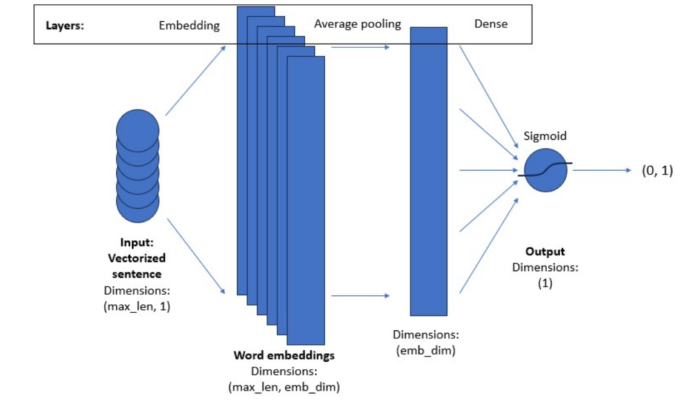
# GRADED FUNCTION: create_model
def create_model(num_words, embedding_dim, max_len):
"""
Creates a text classifier model
Args:
num_words (int): size of the vocabulary for the Embedding layer input
embedding_dim (int): dimensionality of the Embedding layer output
max_len (int): length of the input sequences
Returns:
model (tf.keras Model): the text classifier model
"""
tf.random.set_seed(123)
### START CODE HERE
model = tf.keras.Sequential([
tf.keras.layers.Embedding(num_words, embedding_dim, input_length=max_len),
tf.keras.layers.GlobalAveragePooling1D(),
tf.keras.layers.Dense(1,activation='sigmoid')
])
model.compile(loss='binary_crossentropy',
optimizer='adam',
metrics=['accuracy'])
### END CODE HERE
return model
model = create_model(num_words=num_words, embedding_dim=16, max_len=max_len)
# 启动训练
history = model.fit(train_x_prepared, train_y_prepared, epochs=20, validation_data=(val_x_prepared, val_y_prepared))
# 模型预测
# Prepare an example with 10 positive and 10 negative tweets.
example_for_prediction = np.append(val_x_prepared[0:10], val_x_prepared[-10:], axis=0)
# Make a prediction on the tweets.
model.predict(example_for_prediction)
RNN vs N-grams
传统的N-grams如果要获取在句子之中相距较远的两个次之间的关系，N要设置的很大 \ 当N很大时，N-grams需要计算很大的条件概率，这对内存和硬盘的消耗量就非常大
RNN能够将一句话中较远的词信息向后传递很远的距离(当然，距离越远保留的信息占比越少)，以下是RNN的神经元信息传递的简图
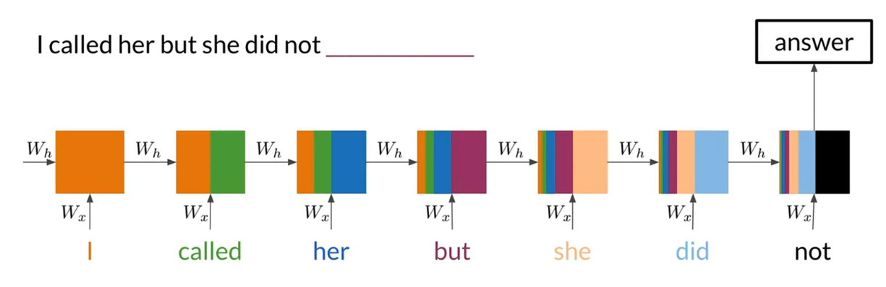
RNN 在 one to many/many to one /many to many 的场景都能适用
Vanilla RNN
Vanilla RNN（最基本的循环神经网络）是一类用于建模序列数据的神经网络，其核心在于通过隐藏状态在时间维度上传递信息，实现对序列依赖的建模。
核心结构
在时间步 \(t\)，模型接收当前输入 \(x^{<t>}\) 和上一步的隐藏状态 \(h^{<t-1>}\)，计算新的隐藏状态 \(h^{<t>}\)，并可产生输出 \(\hat{y}^{<t>}\)。 参数在所有时间步共享，因此可处理可变长度序列。
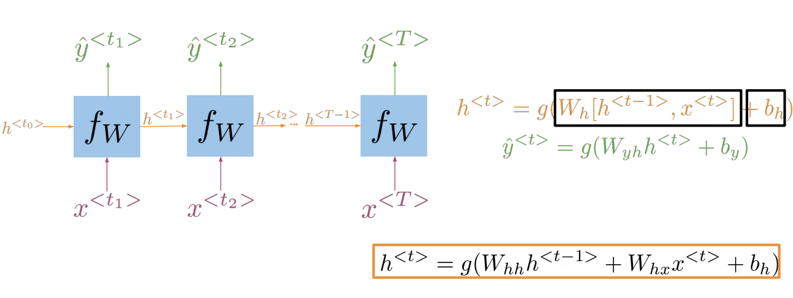
具体展开一个单元格如下
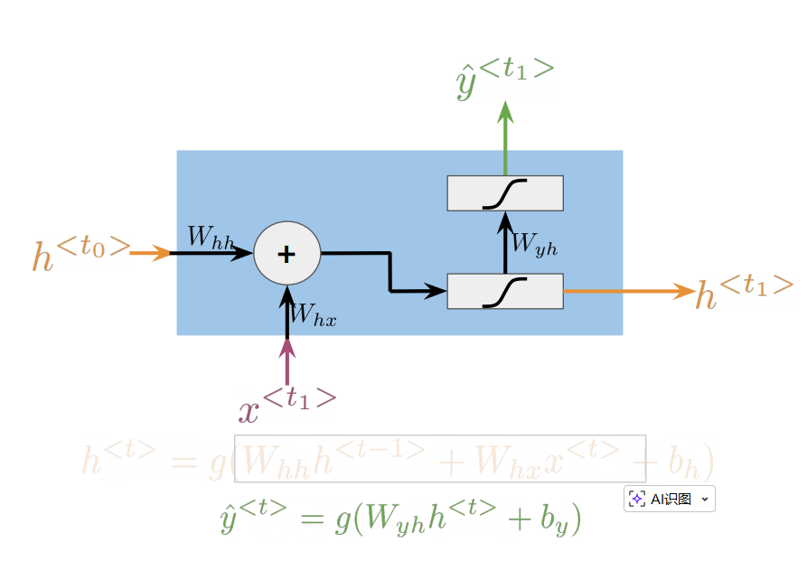
其中 \(W_{hh}: (d_h,d_h)\) , \(W_{xh}: (d_h, d_{in})\), \(W_{yh}: (d_{out}, d_h)\), \(b_{h}: (d_h)\), \(b_{y}: (d_{out})\) 都是需要学习的重要参数(括号中是它们的维度)
GRU(Gated Recurrent Unit)
GRU是一种带门控机制的循环神经网络单元，旨在缓解普通 RNN 的梯度消失问题，更好地捕捉长程依赖，同时保持相对较低的参数量和计算开销。
其主要包括输入变量、隐状态(\(H_{t_i}\))、重置门(\(R_t\))、更新门(\(Z_t\))、候选隐状态(\(\tilde{H_i}\))以及激活函数几部分。
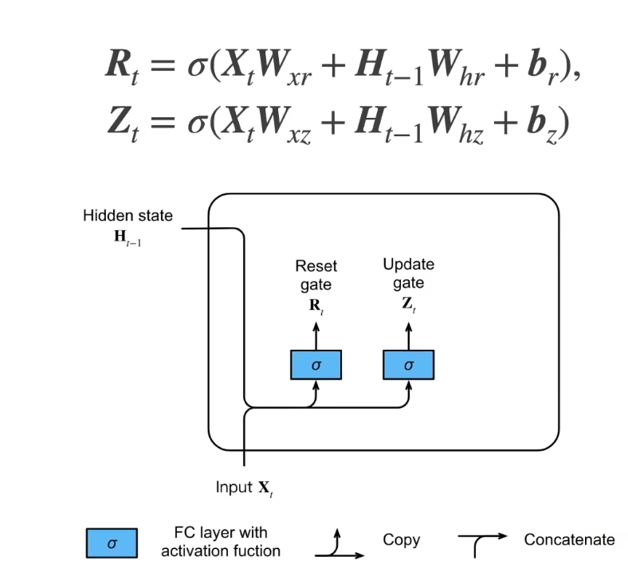
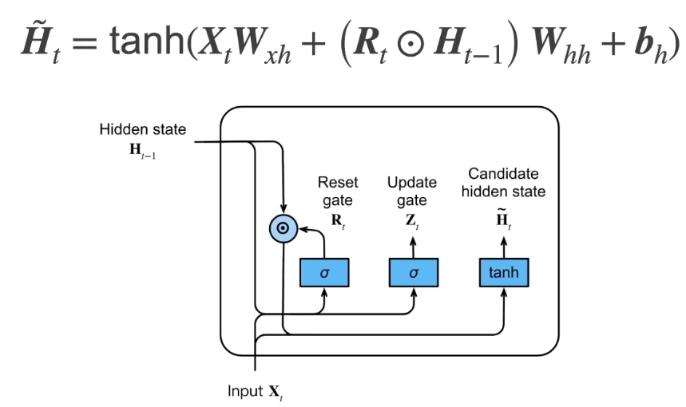
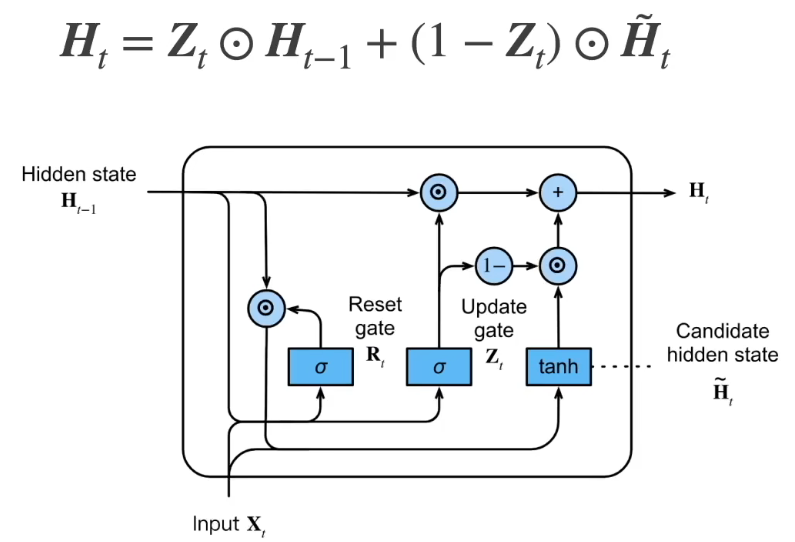
以上三个图展示了GRU的过程 李沐视频
(\(\odot\) 表示按元素依次相乘)
两个特殊场景，退化为RNN - 当重置门(\(R_t\))为1，候选隐状态(\(\tilde{H_i})\)就是RNN的递推公式 - 当重置门(\(R_t\))为1，更新门(\(Z_t\))为0，隐状态(\(H_{t_i}\))就是RNN的递推公式
重置门(\(R_t\))和更新门(\(Z_t\))在维度上都是与隐状态(\(H_{t_i}\))及候选隐状态(\(\tilde{H_i})\)相同的\ 重置门(\(R_t\))和更新门(\(Z_t\)) 中的每个数值都在[0,1]之间，用于表示"选取比例"
GRU就是增加了两个门，从而增加了一系列可以学习到的参数，通过“更新门”和“重置门”建立了近似“加性”的状态通路，缓解梯度消失问题，使信息可以在较长时间跨度上保留。更新门允许“跳过”不必要的更新，让有用的记忆在多步中持续存在。重置门可以在需要时“忘记”历史，只用当前输入建模短期模式；更新门则在需要时保持长期记忆，兼顾短期与长期依赖。
简单说就是在一个长序列中，自动学习到哪些参数要更长的传递下去，哪些信息可以及时舍去。
PA2 Deep N-grams
- Data Preprocessing
- Dataset Import:
- Data Storage
- Character-Level Processing (注意是字符级的，不是单词级的)
- tf.keras.layers.StringLookup 函数可以把一个字典中的每个字都映射成一个唯一数字，并输出一个tensor。同时这个函数也可以有反向的变换，使用参数invert=True
- TensorFlow Dataset Creation
- 需要把整片文章连成一个很长的句子，用tensorflow的方法，定义一个generator，每次可以生成n个batch，每个batch长度为seq_length+1的一组字符
- Dataset Creation
# GRADED FUNCTION: create_batch_dataset
def create_batch_dataset(lines, vocab, seq_length=100, batch_size=64):
"""
Creates a batch dataset from a list of text lines.
Args:
lines (list): A list of strings with the input data, one line per row.
vocab (list): A list containing the vocabulary.
seq_length (int): The desired length of each sample.
batch_size (int): The batch size.
Returns:
tf.data.Dataset: A batch dataset generator.
"""
# Buffer size to shuffle the dataset
# (TF data is designed to work with possibly infinite sequences,
# so it doesn't attempt to shuffle the entire sequence in memory. Instead,
# it maintains a buffer in which it shuffles elements).
BUFFER_SIZE = 10000
# For simplicity, just join all lines into a single line
single_line_data = "\n".join(lines)
### START CODE HERE ###
# Convert your data into a tensor using the given vocab
all_ids = line_to_tensor('\n'.join(lines), vocab) # 拼接成一个大句子，all_ids中每项是一个字母对应的ID
# Create a TensorFlow dataset from the data tensor
ids_dataset = tf.data.Dataset.from_tensor_slices(all_ids) # 创建dataset，这个dataset就能从中按批次取指定数量的字符
# Create a batch dataset
data_generator = ids_dataset.batch(seq_length + 1, drop_remainder=True) # 定义generator
# Map each input sample using the split_input_target function
dataset_xy = data_generator.map(split_input_target) # 从一个batch取出的一组字符，按split_input_target函数，分解成两个部分，这两部分一个是input，另一个是output，实际就是一对(input, output)
# Assemble the final dataset with shuffling, batching, and prefetching
dataset = (
dataset_xy
.shuffle(BUFFER_SIZE) # 对所有(input, output)对进行随机打乱
.batch(batch_size, drop_remainder=True) # 每次取出 batch_size 对
.prefetch(tf.data.experimental.AUTOTUNE)
)
# 预取（prefetch）
# 预取的作用：在训练（GPU/TPU 进行前向/反向）时，CPU 在后台并行准备下一个 batch（例如解码、切片、拷贝等），从而把数据准备和训练计算重叠，减少输入等待时间，提高吞吐。
# tf.data.AUTOTUNE 会让 TensorFlow 根据系统资源自动选择一个合适的预取缓冲区大小，通常是最省心的配置。
# 预取一般放在流水线末尾，以覆盖上游所有处理的耗时。
### END CODE HERE ###
return dataset
- Defining the GRU Language Model，一个三层模型如下
# GRADED CLASS: GRULM
class GRULM(tf.keras.Model):
"""
A GRU-based language model that maps from a tensor of tokens to activations over a vocabulary.
Args:
vocab_size (int, optional): Size of the vocabulary. Defaults to 256.
embedding_dim (int, optional): Depth of embedding. Defaults to 256.
rnn_units (int, optional): Number of units in the GRU cell. Defaults to 128.
Returns:
tf.keras.Model: A GRULM language model.
"""
def __init__(self, vocab_size=256, embedding_dim=256, rnn_units=128):
super().__init__(self)
### START CODE HERE ###
# Create an embedding layer to map token indices to embedding vectors
self.embedding = tf.keras.layers.Embedding(vocab_size, embedding_dim)
# Define a GRU (Gated Recurrent Unit) layer for sequence modeling
self.gru = tf.keras.layers.GRU(rnn_units, return_sequences = True, return_state = True)
# Apply a dense layer with log-softmax activation to predict next tokens
self.dense = tf.keras.layers.Dense(units = vocab_size, activation=tf.nn.log_softmax)
### END CODE HERE ###
def call(self, inputs, states=None, return_state=False, training=False):
x = inputs
# Map input tokens to embedding vectors
x = self.embedding(x, training=training)
if states is None:
# Get initial state from the GRU layer
states = self.gru.get_initial_state(x)
x, states = self.gru(x, initial_state=states, training=training)
# Predict the next tokens and apply log-softmax activation
x = self.dense(x, training=training)
if return_state:
return x, states
else:
return x
# Length of the vocabulary in StringLookup Layer
vocab_size = 82
# The embedding dimension
embedding_dim = 256
# RNN layers
rnn_units = 512
model = GRULM(
vocab_size=vocab_size,
embedding_dim=embedding_dim,
rnn_units = rnn_units)
def compile_model(model):
"""
Sets the loss and optimizer for the given model
Args:
model (tf.keras.Model): The model to compile.
Returns:
tf.keras.Model: The compiled model.
"""
### START CODE HERE ###
# Define the loss function. Use SparseCategoricalCrossentropy
# 多分类任务常用的交叉熵损失
# 为什么要设置 from_logits=True：告诉损失函数“模型输出不是归一化的概率分布”。常见做法是让模型最后一层输出未归一化的分数（logits），损失内部会自己做 softmax 再算交叉熵，数值更稳定。
# 现在的模型最后一层输出的是 log_softmax 激活函数
loss = tf.keras.losses.SparseCategoricalCrossentropy(from_logits=True)
# Define and Adam optimizer
opt = tf.keras.optimizers.Adam(learning_rate = 0.00125)
# Compile the model using the parametrized Adam optimizer and the SparseCategoricalCrossentropy funcion
model.compile(optimizer=opt, loss=loss)
### END CODE HERE ###
return model
- Evaluating using the Deep Nets
采用困惑度来衡量
以下计算困惑度的函数，入参 preds 是计算值， target 是实际值，具体如下： - \(preds\) 形状 \([batch, seq\_len, vocab]\)，每个位置是对各词的“对数概率”（\(\log p\)）。 - \(target\) 形状 \([batch, seq\_len]\) 每个位置是目标 token 的 id；id=1 的位置是 padding，需要在计算中忽略。
def log_perplexity(preds, target):
"""
Function to calculate the log perplexity of a model.
Args:
preds (tf.Tensor): Predictions of a list of batches of tensors corresponding to lines of text.
target (tf.Tensor): Actual list of batches of tensors corresponding to lines of text.
Returns:
float: The log perplexity of the model.
"""
PADDING_ID = 1
### START CODE HERE ###
# Calculate log probabilities for predictions using one-hot encoding
# tf.one_hot(target, depth=preds.shape[-1])：把目标 token 的索引 target 转成 one-hot 向量，维度变为 [batch_size, seq_len, vocab_size]，其中目标词的位置为1，其余为0。depth 取 preds 的最后一维大小，即词表大小 vocab_size。
# 与 preds 相乘：，每个位置上是各词的对数概率（log p(w|context)）。将 one-hot 与 preds 按元素相乘，会把非目标词的对数概率清零，只保留目标词的对数概率。
# np.sum(..., axis=-1)：在最后一维（vocab 维）做求和，由于只有目标词位置是非零，这个求和的结果就是每个位置的“目标词的对数概率”。因此 log_p 的形状是 [batch_size, seq_len]。
log_p = np.sum(tf.one_hot(target, depth=preds.shape[-1]) * preds, axis= -1) # HINT: tf.one_hot(...) should replace one of the Nones
# Identify non-padding elements in the target
# np.equal(target, PADDING_ID)：对 target 中每个位置做比较，得到一个布尔矩阵，形状为 [batch_size, seq_len]。在 target 等于 PADDING_ID（这里是1）的地方为 True，表示该位置是 padding。
# 1.0 - ...：把布尔值转成数值掩码：True 当作 1，False 当作 0（或先转成浮点），再用 1.0 去减。这样 padding 位置会变成 0，非 padding 位置会变成 1。最终得到一个浮点掩码矩阵 non_pad，值为 1 的地方表示有效 token，值为 0 的地方表示 padding。
# 与困惑度的关系：困惑度应只在真实 token 上计算，忽略 padding。这个掩码用于后面屏蔽 padding 的 log 概率，并在归一化时只统计有效 token 的个数，避免 padding 稀释或干扰损失/困惑度的计算。
non_pad = 1.0 - np.equal(target, PADDING_ID) # You should check if the target equals to PADDING_ID
# Apply non-padding mask to log probabilities to exclude padding
# 这是把上一句得到的非 padding 掩码 non_pad 应用到每个位置的目标词对数概率 log_p 上。两者形状一致（都为 [batch_size, seq_len]），按元素相乘。
# 在非 padding 的位置，non_pad 为 1，log_p 保持原值；在 padding 的位置，non_pad 为 0，log_p 被置为 0。
# 作用是“屏蔽”掉填充位置的对数概率，使后续求和与平均时不把填充位置计入，从而只基于有效 token 计算负对数似然与困惑度。
log_p = log_p * non_pad # Get rid of the padding
# Calculate the log perplexity by taking the sum of log probabilities and dividing by the sum of non-padding elements
# np.sum(log_p, axis=-1)：对每个序列的时间维（seq_len，最后一维）求和，得到该序列中所有有效 token 的对数概率之和。形状从 [batch_size, seq_len] 变为 [batch_size]。
# np.sum(non_pad, axis=-1)：同样在时间维上求和，得到每个序列中非 padding 的 token 数量（有效长度）。形状也是 [batch_size]。
# 两者相除：把“总对数概率”除以“有效 token 数”，得到每个序列的平均对数概率（每词的平均 log p）。这相当于计算负对数似然的“每词平均值”的前一步，只是还未取负。
# 与困惑度的关系：困惑度 PPL = exp(平均负对数似然)。此处先为每个序列求出“平均 log 概率”（未取负），后面会再对 batch 做平均并取负，从而得到平均负对数似然的值，最终返回其相反数（log perplexity）。通过除以 non_pad 的和，明确只对有效 token 做长度归一化，避免被 padding 影响。
# 这步基本就是上面公式的最后一行
log_ppx = np.sum(log_p, axis=-1) / np.sum(non_pad, axis=-1) # Remember to set the axis properly when summing up
# Compute the mean of log perplexity
# 上一行得到的 log_ppx 形状是 [batch_size]，表示每个序列的“平均对数概率”（每词平均 log p）。
# np.mean(...) 对整个 batch 维度再取均值，把所有序列的平均对数概率做“序列级均值”，得到一个标量。
# 这样做的含义是：先对每个序列按其有效长度做归一化（每词平均），再对序列做均值，等权地对每个序列取平均。这是“按序列等权”的平均，而不是“按 token 等权”的平均。如果希望按所有有效 token 等权平均，可以直接在 batch 和时间维上对 log_p 求总和，再除以 non_pad 的总和。当前实现则是先序列内平均，再序列间平均。
log_ppx = np.mean(log_ppx) # Compute the mean of the previous expression
### END CODE HERE ###
return -log_ppx
LSTM
LSTM与GRU类似，是为了解决普通RNN可能出现的梯度消失或梯度爆炸而提出的。 三个门 - 遗忘门：决定从旧记忆 Ct-1 中保留多少到当前 Ct。ft接近1时几乎完整保留，接近0时基本清除。它使模型可以在需要时“重置”部分记忆，也可以长期保持信息，从而维持梯度沿Ct通道的稳定传播。 - 输入门：控制新信息写入单元状态的强度。与候选 C̃t 搭配使用，决定当前时刻有多少新内容被纳入记忆。 - 输出门：控制暴露给外部（隐藏状态 ht）的信息量。虽然 Ct 可能长期存储信息，但 ot 决定这些信息在当前时刻对后续层或任务的可见性。 - 候选状态 C̃t：基于当前输入和过去上下文生成的候选内容，经输入门筛选后写入记忆。 - Ct表示每个cell的状态，Ht表示隐状态
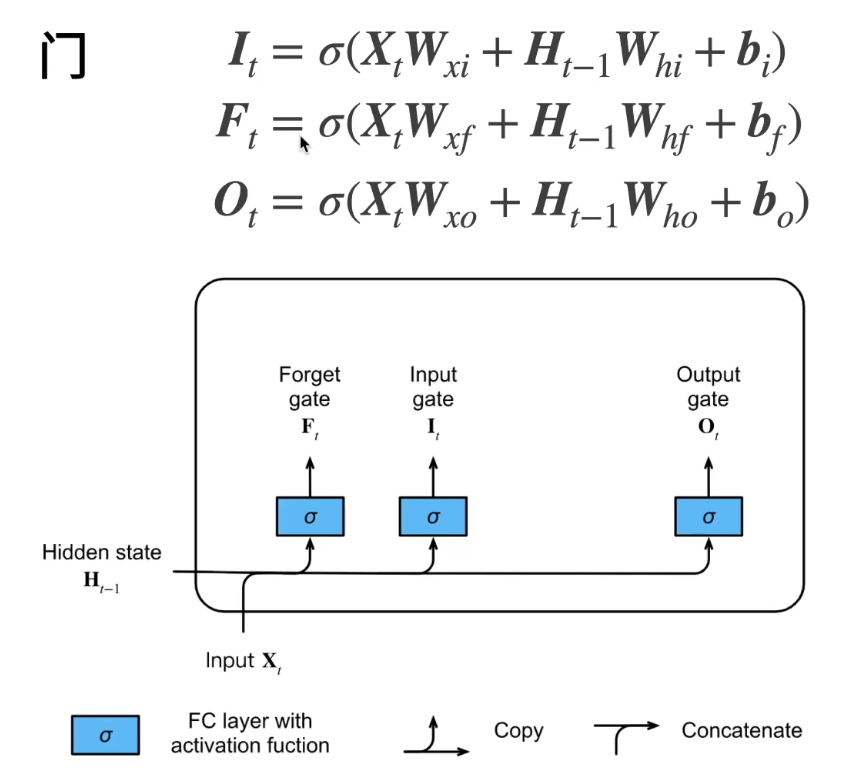
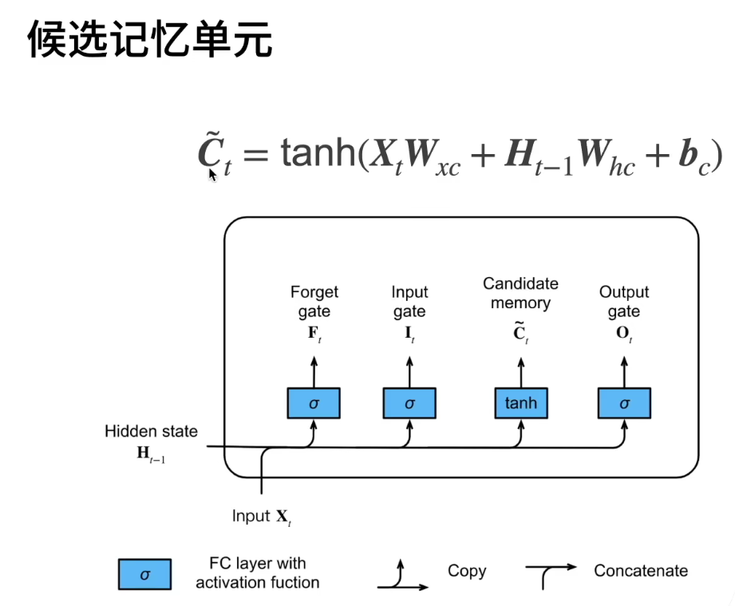
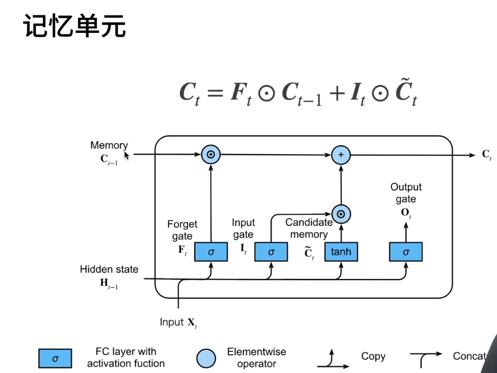
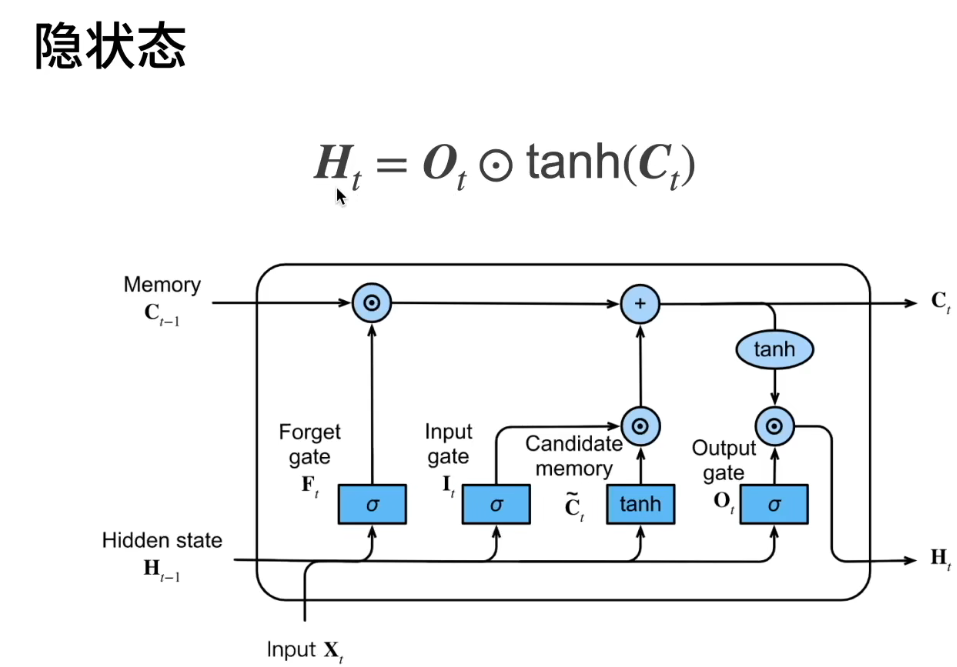
以上三个图展示了LSTM的过程 李沐视频
加上output的图，如下：
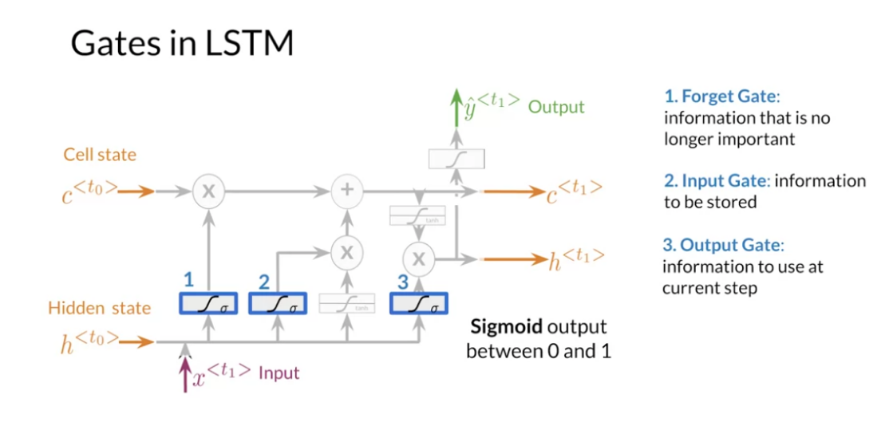
PA3: Named Entity Recognition (NER)
核心目标，是基于序列建模方法实现一个标注器，对句子中的每个词预测其实体标签（如人名、地点、组织等的BIO/IOB格式标签）
编码
将句子向量化
构建词表与标签表：将训练集中的词汇映射为索引；不在词表中的词设为 UNK；保留 PAD 用于补齐。\ 序列化与填充：将每个句子转为词索引序列、标签索引序列；对齐到统一长度（max_len），在末尾用 PAD 填充，同时对标签用“O”或PAD标签对齐；生成对应的mask以忽略PAD位置。\ 可选：字符级表示（char-level）或预训练词向量（如GloVe）加载与对齐。
编码标签
将字符串标签（如 B-PER、I-ORG、O 等）映射为整数索引，便于模型训练。 - 收集标签集合 遍历所有标签序列（按空格分割），汇总成集合，排序得到稳定的列表。 参考函数：get_tags(labels) 返回排序后的标签列表。 - 建立标签到索引的映射 构建 tag2id 字典，保证每个标签有唯一的整数索引（从 0 开始），O也要有一个标签。 参考函数：make_tag_map(tags) 返回 {tag: index}。 - 将每个句子的标签序列转为索引序列（与句子的词序列一一对应）。
标签填充
目标：让每个句子的标签序列长度与其对应的词序列完全一致（TextVectorization 已经对句子做了后置填充 post padding），因此标签也需要相同方式的填充。
- 使用后置填充（post），保证时间步与句子对齐；
- 使用 -1 作为填充值，而不是 0：
- 0 需要保留为一个有效标签索引（因为标签索引从 0 开始）；
- 选择 -1 后，后续在计算损失和评估时对 -1 位置进行掩码忽略，简化处理（避免修改模型结构或损失函数逻辑）。
构建模型
# GRADED FUNCTION: NER
def NER(len_tags, vocab_size, embedding_dim = 50):
"""
Create a Named Entity Recognition (NER) model.
Parameters:
len_tags (int): Number of NER tags (output classes).
vocab_size (int): Vocabulary size.
embedding_dim (int, optional): Dimension of embedding and LSTM layers (default is 50).
Returns:
model (Sequential): NER model.
"""
### START CODE HERE ###
model = tf.keras.Sequential(name = 'sequential')
# Add the tf.keras.layers.Embedding layer. Do not forget to mask out the zeros!
# Embedding(input_dim=vocab_size + 1, output_dim=embedding_dim, mask_zero=True)
# 功能：把整数化的词ID映射到稠密向量表示，维度为 embedding_dim。
# mask_zero=True：将输入中的0视为padding掩码，训练与计算时会忽略这些位置，掩码信息会自动传递给后续支持mask的层（如LSTM）。
# input_dim 使用 vocab_size + 1：当启用 mask_zero 时，0 专门留给“padding”，因此需要在词表大小基础上再加1，为0这个特殊值预留位置。
model.add(tf.keras.layers.Embedding(input_dim=vocab_size + 1,
output_dim=embedding_dim,
mask_zero=True))
# Add the LSTM layer. Make sure you are passing the right dimension (defined in the docstring above)
# and returning every output for the tf.keras.layers.LSTM layer and not the very last one.
# LSTM(units=embedding_dim, return_sequences=True)
# 功能：对序列进行时序建模，输出每个时间步的隐藏状态。
# units=embedding_dim：隐藏单元数设置为与嵌入维度相同（这是一种常见但非必需的选择）。
# return_sequences=True：返回整条序列每个时间步的输出，用于逐词打标签；若为 False 则只返回最后一步，不符合序列标注需求。
model.add(tf.keras.layers.LSTM(units=embedding_dim, return_sequences=True))
# Add the final tf.keras.layers.Dense with the appropriate activation function. Remember you must pass the activation function itself ant not its call!
# You must use tf.nn.log_softmax instead of tf.nn.log_softmax().
# Dense(units=len_tags, activation=tf.nn.log_softmax)
# 功能：把每个时间步的隐藏表示映射到标签空间（len_tags 个类别），并对最后一维做对数Softmax，得到每个标签的对数概率。
# 注意传入的是函数本身 tf.nn.log_softmax，而不是调用结果 tf.nn.log_softmax()。
model.add(tf.keras.layers.Dense(units=len_tags, activation=tf.nn.log_softmax))
### END CODE HERE ###
return model
损失函数
SparseCategoricalCrossentropy：稀疏类别交叉熵损失函数
# GRADED FUNCTION: masked_loss
def masked_loss(y_true, y_pred):
"""
Calculate the masked sparse categorical cross-entropy loss.
Parameters:
y_true (tensor): True labels.
y_pred (tensor): Predicted logits.
Returns:
loss (tensor): Calculated loss.
"""
### START CODE HERE ###
# Calculate the loss for each item in the batch. Remember to pass the right arguments, as discussed above!
# 上面模型的输出是Dense，再用激活函数logSoftmax，为logits（logits 不是概率，即不一定加起来为1，），
# 标签的 padding 值是 -1，这里体现了 masked，在计算交叉熵时，忽略掉padding
loss_fn = tf.keras.losses.SparseCategoricalCrossentropy(from_logits=True, ignore_class=-1)
# Use the previous defined function to compute the loss
loss = loss_fn(y_true,y_pred)
### END CODE HERE ###
计算准确度
def masked_accuracy(y_true, y_pred):
"""
Calculate masked accuracy for predicted labels.
Parameters:
y_true (tensor): True labels.
y_pred (tensor): Predicted logits.
Returns:
accuracy (tensor): Masked accuracy.
"""
### START CODE HERE ###
# Calculate the loss for each item in the batch.
# You must always cast the tensors to the same type in order to use them in training. Since you will make divisions, it is safe to use tf.float32 data type.
y_true = tf.cast(y_true, tf.float32)
# Create the mask, i.e., the values that will be ignored
mask = y_true != -1
mask = tf.cast(mask, tf.float32)
# Perform argmax to get the predicted values
y_pred_class = tf.argmax(y_pred, axis=-1)
y_pred_class = tf.cast(y_pred_class, tf.float32)
# Compare the true values with the predicted ones
matches_true_pred = tf.equal(y_true, y_pred_class)
matches_true_pred = tf.cast(matches_true_pred , tf.float32)
# Multiply the acc tensor with the masks
matches_true_pred *= mask
# Compute masked accuracy (quotient between the total matches and the total valid values, i.e., the amount of non-masked values)
masked_acc = tf.reduce_sum(matches_true_pred) / tf.reduce_sum(mask)
### END CODE HERE ###
return masked_acc
模型训练
model.compile(optimizer=tf.keras.optimizers.Adam(0.01),
loss = masked_loss,
metrics = [masked_accuracy])
tf.keras.utils.set_random_seed(33) ## Setting again a random seed to ensure reproducibility
BATCH_SIZE = 64
model.fit(train_dataset.batch(BATCH_SIZE),
validation_data = val_dataset.batch(BATCH_SIZE),
shuffle=True,
epochs = 2)
模型预测
# GRADED FUNCTION: predict
def predict(sentence, model, sentence_vectorizer, tag_map):
"""
Predict NER labels for a given sentence using a trained model.
Parameters:
sentence (str): Input sentence.
model (tf.keras.Model): Trained NER model.
sentence_vectorizer (tf.keras.layers.TextVectorization): Sentence vectorization layer.
tag_map (dict): Dictionary mapping tag IDs to labels.
Returns:
predictions (list): Predicted NER labels for the sentence.
"""
### START CODE HERE ###
# Convert the sentence into ids
sentence_vectorized = sentence_vectorizer(sentence)
# Expand its dimension to make it appropriate to pass to the model
# 增加一个维度作为batch，模型的输入是有batch这个维度的
sentence_vectorized = tf.expand_dims(sentence_vectorized, axis = 0)
# Get the model output
output = model.predict(sentence_vectorized)
# Get the predicted labels for each token, using argmax function and specifying the correct axis to perform the argmax
outputs = np.argmax(output, axis = -1)
# Next line is just to adjust outputs dimension. Since this function expects only one input to get a prediction, outputs will be something like [[1,2,3]]
# so to avoid heavy notation below, let's transform it into [1,2,3]
outputs = outputs[0]
# Get a list of all keys, remember that the tag_map was built in a way that each label id matches its index in a list
labels = list(tag_map.keys())
pred = []
# Iterating over every predicted token in outputs list
for tag_idx in outputs:
pred_label = labels[tag_idx]
pred.append(pred_label)
### END CODE HERE ###
return pred